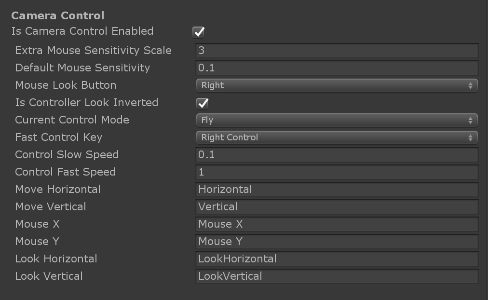
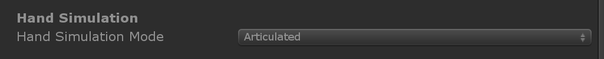
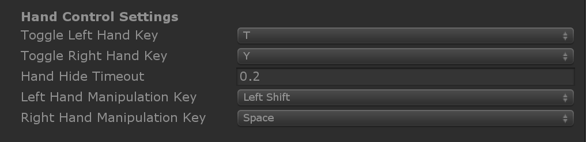
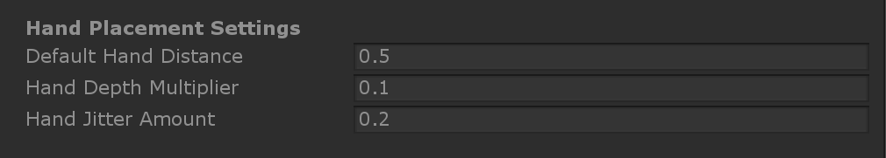

Input Simulation Service
The Input Simulation Service emulates the behaviour of devices and platforms that may not be available in the Unity editor. Examples include:
- HoloLens or VR device head tracking
- HoloLens hand gestures
- HoloLens 2 articulated hand tracking
Users can use a conventional keyboard and mouse combination to control simulated devices at runtime. This allows testing of interactions in the Unity editor without first deploying to a device.
| Warning: This does not work when using Unity's XR Holographic Emulation -> Emulation Mode = "Simulate in Editor". Unity's in-editor simulation will take control away from MRTK's input simulation. In order to use the MRTK input simulation service, you will need to set XR Holographic Emulation to Emulation Mode = "None" |
|---|
Enabling the Input Simulation Service
Input simulation is enabled by default in MRTK.
Input simulation is an optional Mixed Reality service. It can be added as a data provider in the Input System profile.
Type must be Microsoft.MixedReality.Toolkit.Input > InputSimulationService.
Platform(s) should always be Windows Editor since the service depends on keyboard and mouse input.
Profile has all settings for input simulation.
Warning: Any type of profile can be assigned to services at the time of this writing. If you assign a different profile to the service, make sure to use a profile of type Input Simulation or it will not work!

Open the linked profile to access settings for input simulation.

Camera Control
Head movement can be emulated by the Input Simulation Service.
Rotating the camera
Hover over the viewport editor window.
You may need to click the window to give it input focus if button presses don't work.
Press and hold the Mouse Look Button (default: Right mouse button).
Move the mouse in the viewport window to rotate the camera.
Moving the camera
Press and hold the movement keys (W/A/S/D for forward/left/back/right).
Hand Simulation
The input simulation supports emulated hand devices. These virtual hands can interact with any object that supports regular hand devices, such as buttons or grabable objects.
The Hand Simulation Mode switches between two distinct input models.
Articulated Hands: Simulates a fully articulated hand device with joint position data.
Emulates Hololens 2 interaction model.
Interactions that are based on precise positioning of the hand or use touching can be simulated in this mode.
Gestures: Simulates a simplified hand model with air tap and basic gestures.
Emulates Hololens interaction model.
Focus is controlled using the Gaze pointer. The Air Tap gesture is used to interact with buttons.
Controlling hand movement
Press and hold the Left/Right Hand Manipulation Key (default: Left Shift/Space for left/right respectively) to gain control of either hand. While the manipulation key is pressed, the hand will appear in the viewport. Mouse movement will move the hand in the view plane.
Once the manipulation key is released the hands will disappear after a short Hand Hide Timeout. To toggle hands on permanently, press the Toggle Left/Right Hand Key (default: T/Y for left/right respectively). Press the toggle key again to hide the hands again.
Hands can be moved further or closer to the camera using the mouse wheel. By default the hand will move somewhat slowly in response to mouse scroll, and this can be made faster by changing the Hand Depth Multiplier to a larger number.
The initial distance from the camera that the hand appears at is controlled by Default Hand Distance.
By default, the simulated hand joints will be perfectly still. Note that on devices there will always be some amount of jitter/noise due to the underlying hand tracking. You can see this on the device when you have hand mesh or joints enabled (and see how it has slightly jitter even if you have your hand perfectly still). It's possible to simulate jitter by changing Hand Jitter Amount to a positive value (for example, 0.1 as is shown in the image above).

Hands can be rotated when precise direction is required.
- Yaw rotates around the Y axis (default: E/Q keys for clockwise/counter-clockwise rotation)
- Pitch rotates around the X axis (default: F/R keys for clockwise/counter-clockwise rotation)
- Roll rotates around the Z axis (default: X/Z keys for clockwise/counter-clockwise rotation)
Hand Gestures
Hand gestures such as pinching, grabbing, poking, etc. can also be simulated.

First enable hand control using the manipulation keys (Left Shift/Space)
Alternatively toggle the hands on/off using the toggle keys (T/Y).
While manipulating, press and hold a mouse button to perform a hand gesture.
Each of the mouse buttons can be mapped to transform the hand shape into a different gesture using the Left/Middle/Right Mouse Hand Gesture settings. The Default Hand Gesture is the shape of the hand when no button is pressed.
| Note: The Pinch gesture is the only gesture that performs the "Select" action at this point. |
|---|
One-Hand Manipulation
- Press and hold hand control key (Space/Left Shift)
- Point at object
- Hold mouse button to pinch
- Use mouse to move the object
- Release mouse button to stop interaction
Two-Hand Manipulation
For manipulating objects with two hands at the same time the persistent hand mode is recommended.
- Toggle on both hands by pressing the toggle keys (T/Y).
- Manipulate one hand at a time:
- Hold Space to control the right hand
- Move the hand to where you want to grab the object
- Press mouse button to activate the Pinch gesture. In persistent mode the gesture will remain active when you release the mouse button.
- Repeat the process with the other hand, grabbing the same object in a second spot.
- Now that both hands are grabbing the same object, you can move either of them to perform two-handed manipulation.
GGV Interaction
- Enable GGV simulation by switching Hand Simulation Mode to Gestures in the Input Simulation Profile
- Rotate the camera to point the gaze cursor at the interactable object (right mouse button)
- Hold Space to control the right hand
- Click and hold left mouse button to interact
- Rotate the camera again to manipulate the object